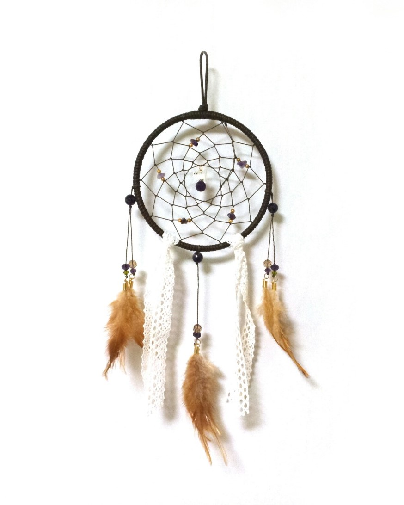
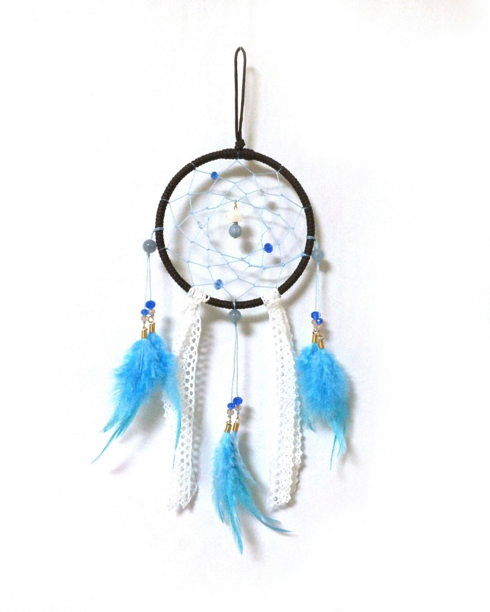
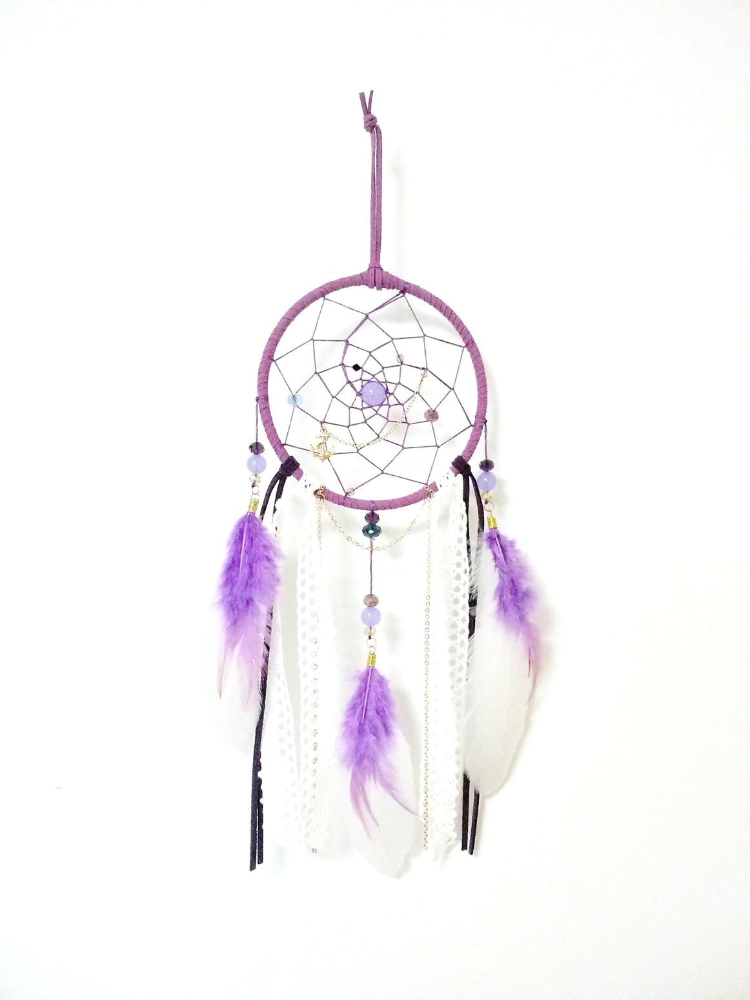
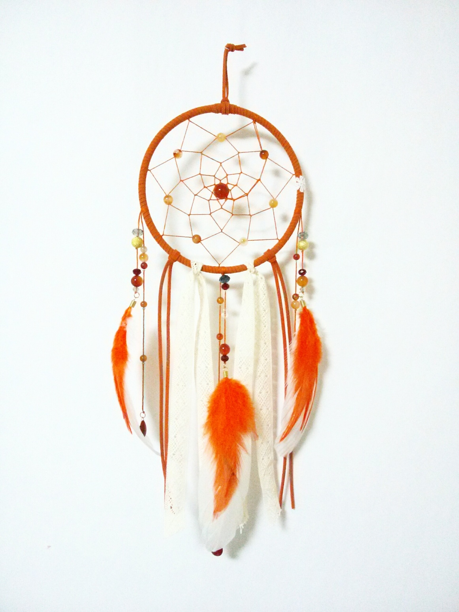
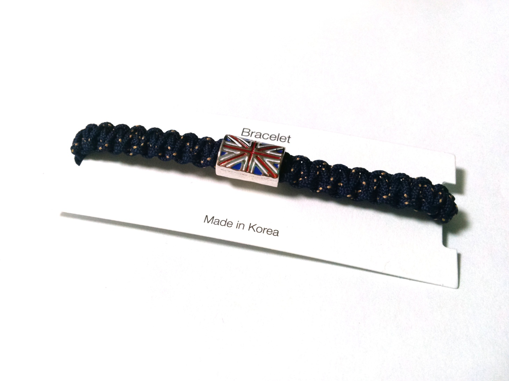
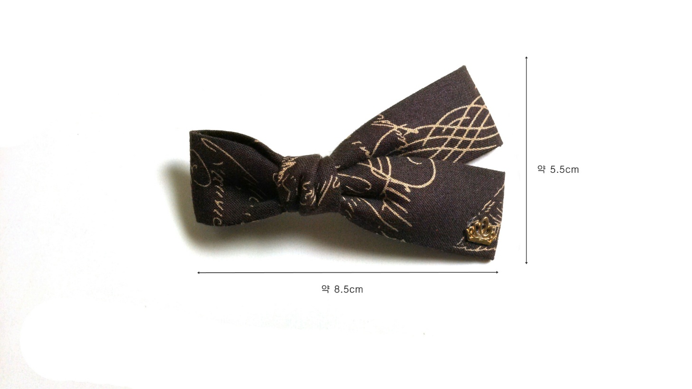
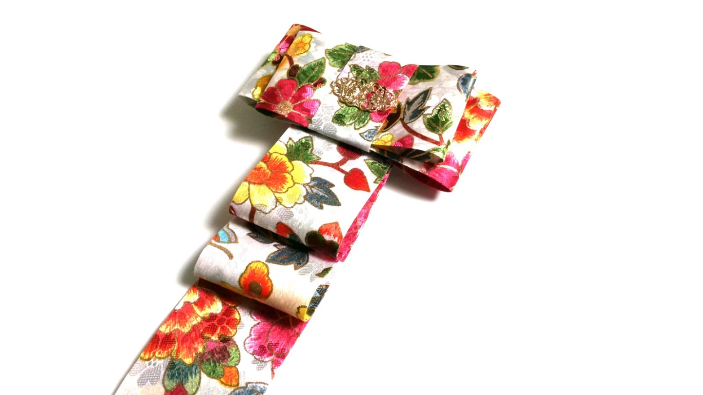
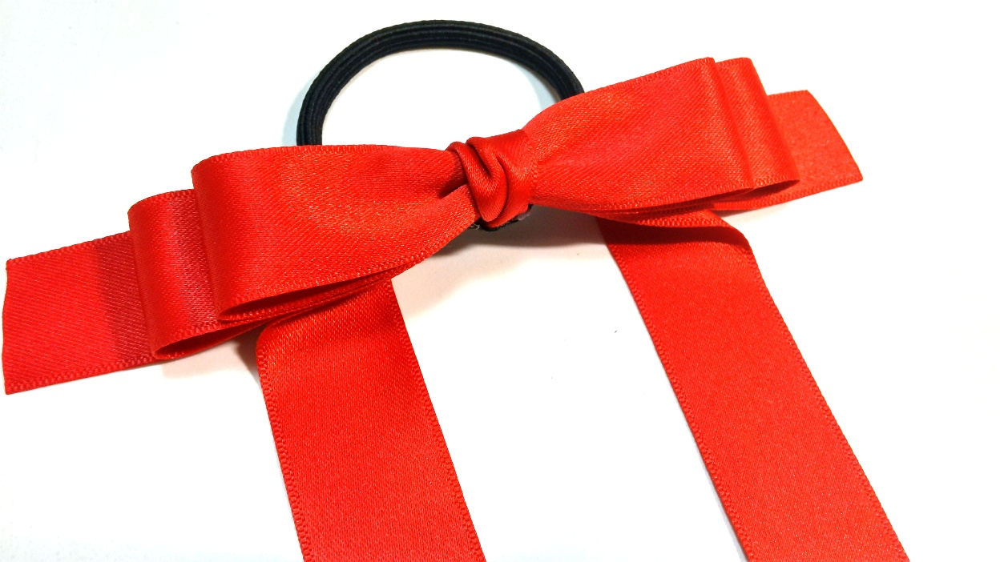
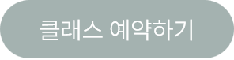
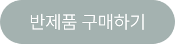

보리공방의 작품들을 한번에 볼 수 있습니다.
| Dream Catcher | |||
|  | purple cat 햄프끈,자수정,고양이자개,레이스,깃털 브라운 계열의 차분한 드림캐쳐를 만들고 싶어서 제작했습니다. 드림캐쳐의 중앙에는 자수정 구슬과 고양이 자개를 걸었고 그물에는 자수정 조각을 사용했습니다. |
 | blue sheeps 햄프끈,라리마,양자개,레이스,깃털 하늘색 위주로 원석과 깃털, 그물색을 통일했으며 중앙에는 라리마원석와 양자개를 팬던트로 만들어 걸어두었습니다. |
|  | fancy 샤무드끈,백옥원석, 골드체인,레이스,깃털 이때까지 만들었던 드림캐쳐 중에서 가장 화려하게 만들고 싶어서 제작했습니다. 가장 인기가 많았던 디자인이며 꾸준한 사랑을 받고있는 제품입니다. |
 | intense 샤무드끈,인도마노원석,골드체인,레이스,깃털 제작을 할 때 활기차면서 화려한 디자인을 생각하며 만들었습니다. 많은 원석과 부자재들이 들어가면서 벽에 메달았을때 인테리어 효과가 확실한 제품입니다. . |
| Accessory | |||
|  | 팬던트 팔찌 로프끈, 팬던트 얇은 로프끈으로 만들어 투박하지않고 쉽게 끊어지지않도록 제작했습니다. |
 | 머리핀 두꺼운 천 리본 기본 리본형이 아닌 변형된 리본스타일로 데일리로 착용해도 부담스럽지 않도록 제작했습니다. |
|  | 댕기머리핀(명절) 한복 원단 리본 명절이나 한복을 입는 특별한 날, 편하게 착용할 수 있도록 제작한 댕기머리핀입니다. 촌스럽지 않으면서도 댕기의 기본 형태를 따라 제작했습니다. |
 | 리본 머리끈 두꺼운 공단 리본 머리를 묶었을때 포인트가 될 수 있도록 리본의 끝을 길게 늘려서 제작했습니다. 착용했을 때 고무줄을 가리면서 리본으로 머리를 묶은 듯한 느낌을 줍니다. |
| 보리 공방 작품에 관심이 있는 분들을 위해 전문가의 도움을 받아 제작할 수 있는 클래스와 혼자서 쉽게 만들 수 있는 반제품들을 판매하고 있습니다. |
|||
|  |  | ||